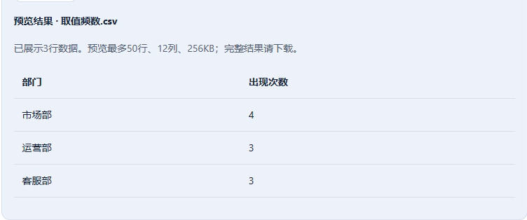

先选主图还是海报
从商品主图、海报等用途进入，对照任务说明选择图片工具。
AI 应用 / Windows 桌面工具
想整理表格、做张海报，还是先试一段短片？
按任务选择工具，照着示例准备输入，完成后就能对照要求检查结果。
从办公、图片、写作或视频分类进入，选到具体任务，就能看到操作说明和工具入口。经常用的本地工具也可以从首页直接打开。
当前 Windows 应用免登录进入，不上传账号。需要第三方服务的任务会指向对应的官网和配置入口。

本地 CSV 工具能清理空行、去掉重复项，也能按字段分类计数。用教学文件试一遍，就能对照原表核对分类和数量。

从商品主图、海报等用途进入，对照任务说明选择图片工具。

从小说任务里找大纲或写作入口，按当前要完成的一步选工具。
在线图片和文字工具需连接自有账号或 API。
视频助手连接本地 ComfyUI 与 Wan2.1 T2V 1.3B。把主体、动作和场景写进提示词，再补上运镜、光线与画面要求。
先用低分辨率生成短片，检查主体是否清楚、动作是否连贯，再调整提示词和生成规格。

样片由视频助手在 Windows 本机生成，使用 RTX 4090D 24GB。生成本地视频需要兼容的 NVIDIA 显卡及足够的存储空间。
24 页使用说明、中文配音教程和练习资料带着用户准备输入、选择工具和检查结果。遇到服务配置或输入问题，可以按常见问题查找操作步骤。
返回首页产品案例 ↑